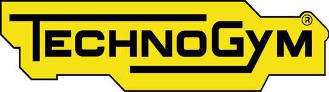
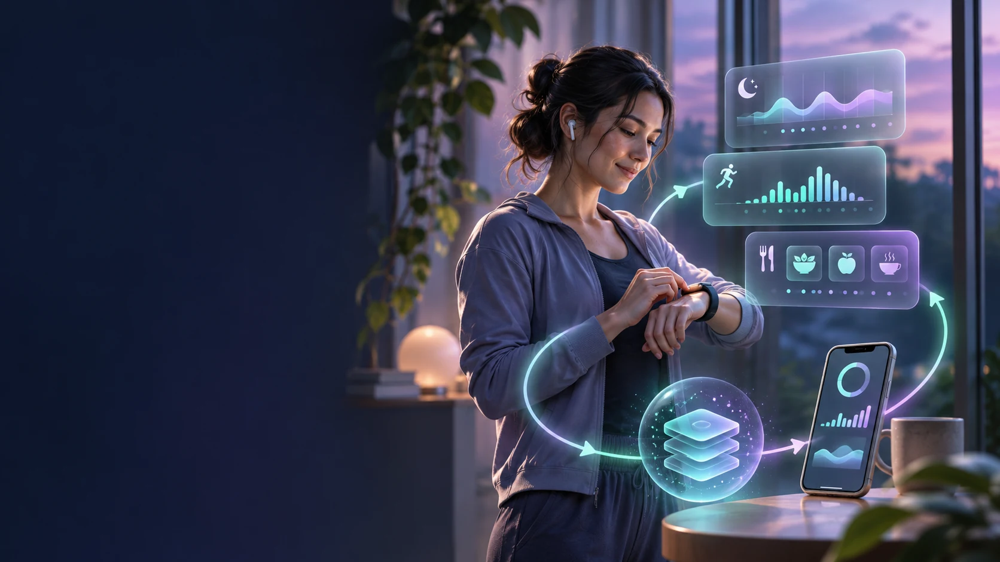
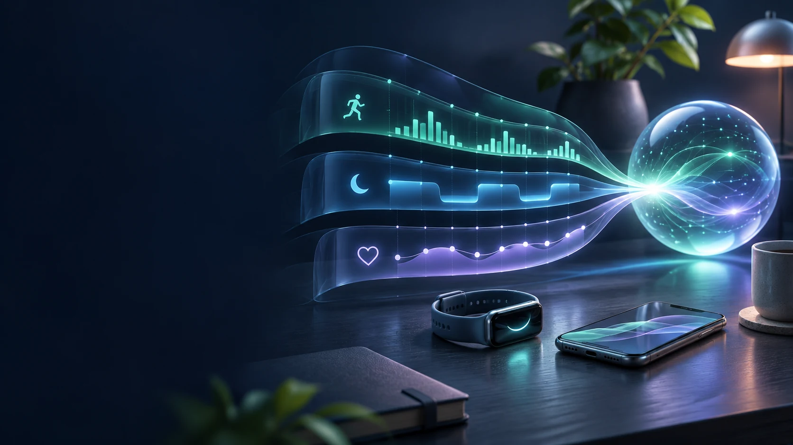
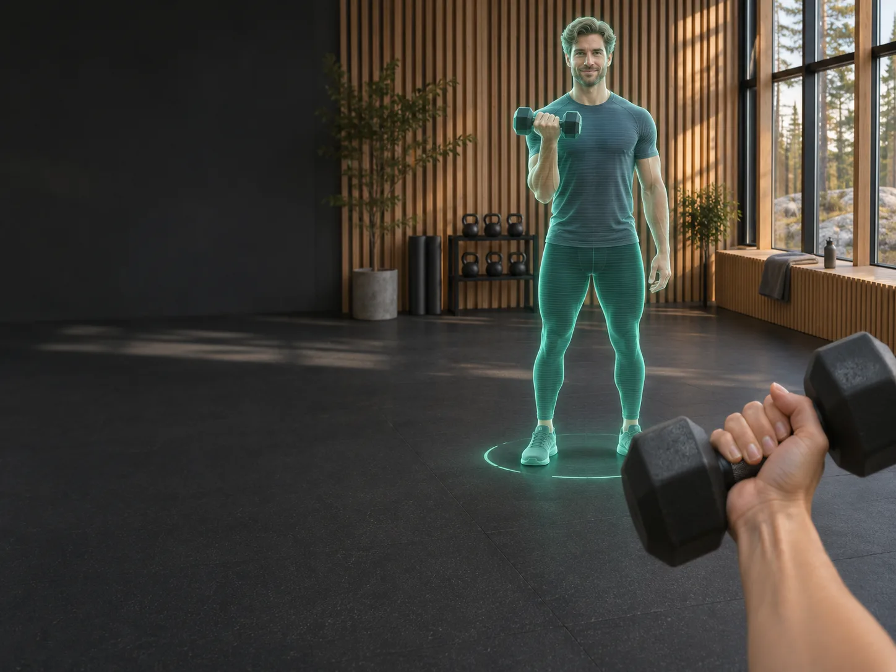
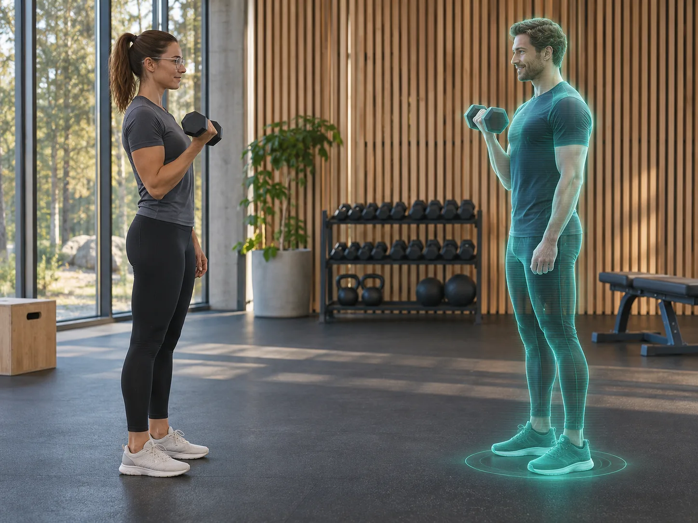
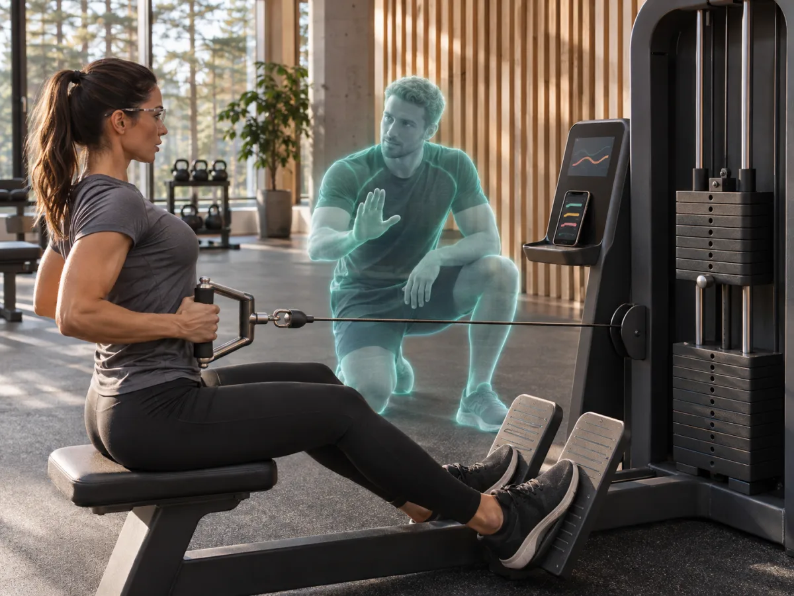

Shared journeys · In developmentWhose path could you follow? Start with someone who shares your starting point and goals.
AR coaching conceptImagine your next workout taking shape in your living room.
At home · AR conceptA virtual trainer could demonstrate each rep right beside you.
At the gym · AR conceptPair shared glasses with ESIVA to bring your own plan into the gym.
Guided workouts · AR conceptYour trainer could guide you to the next machine and show you how to use it.
Adaptive Response CoreEach workout adds context to what you eat and how you recover.
Your daily planESIVA adapts your meals and training as your day unfolds.
Shared journeys · In developmentYour progress could help someone with a similar profile find their next step.
Illustrative video only. Specific features depend on the agreed project scope.
Future concepts for smart glasses and gym equipment
- XREAL glasses
 Meta smart glasses
Meta smart glasses- Vuzix smart glasses

Technogym equipment- Life Fitness equipment
These platforms illustrate future coaching concepts. ESIVA compatibility would require device-specific development and testing.

B2C / ESIVA Personal AI
Your Goal. Your Biology. Your Daily Plan.
ESIVA connects nutrition, movement, workouts and recovery to your goals. The daily plan adapts as new observations and feedback come in.
The research behind ESIVA
How a daily plan learns from the person following it.
Nordic Labs Tech Oy’s in-house research explores how training, meal timing and composition, including sugar intake, relate to hunger, energy and recovery. These observations give ESIVA a starting point for planning food and activity around a person’s goals.
- Build the initial plan
- ARC Engine combines the research with the person’s recent meals, sleep and training to suggest when to eat and how much activity to plan.
- See what actually happened
- A workout might run longer than planned. Its timing, the next meal and the person’s reports of hunger or fatigue all become feedback.
- Adjust the next decision
- That feedback can change the next meal suggestion or the load of a later session. Each recorded action and response feeds back into planning, closing the loop for that individual.

Our intelligence layer
ARC Engine.
Adaptive Responsive Core Engine.
An individual’s history is more than a collection of measurements. ARC connects what happened, the surrounding context, the response and the subsequent outcome.
ARC links each response to what follows. Your sleep, activity and physiological context help explain why the same workout can feel different from one day to the next.
Evidence-led adaptation
Individual evidence.
Continuity over time.
Reference knowledge provides a starting point. The individual’s observations and subsequent responses supply the context needed to evaluate and refine that starting point over time.
The architecture separates the accumulated user context from the analytical tools that work with it. Models can evolve while the history, source relationships and feedback remain connected.
Each response informs the next.
Context
Reference knowledge + individual history
Analysis
Interpret the available evidence
Response
Return a contextual result
Observation
Follow what happens next
The individual’s evolving context
Observations, responses and outcomes accumulate as connected evidence.
Future research concept · AR coaching
Personal intelligence.
Beyond the screen.
AR coaching and connected fitness are prospective developments. Both are at the concept stage and are not available in ESIVA today. We’re exploring a virtual trainer who could stand in front of you, demonstrate the next movement and offer a cue from your plan as you follow along.


Future research concept · Connected fitness
Connected fitness
What if your virtual trainer knew which set you’d just finished? With your permission, ESIVA could connect your workout plan to a compatible machine and use its feedback to guide your next set.

-
The workout plan
Today’s plan calls for three sets of eight seated rows. ESIVA could share the exercise and rep target with the machine you choose.
-
The machine’s feedback
After your second set, the machine could return the eight completed reps and the resistance you used to your session record.
-
The virtual trainer
Using that record and your planned rest, the trainer could cue a break, then demonstrate the row again when you’re ready for the final set.
Future AR interface research
Exploring the next interface for personal AI
Which cue belongs in view during a workout, and when should it disappear? Nordic Labs Tech Oy is evaluating how different AR interfaces could deliver guidance while leaving the athlete free to move.
- Personal contextGoals, nutrition, workouts and recovery
- ESIVA intelligenceARC Engine connects observations over time.
- Future AR interfaceA cue for the next exercise or change of pace
- Context-aware intelligence
- How should today’s recovery and the current set influence a suggestion drawn from previous sessions?
- AR visualization
- Explore where an exercise cue or progress indicator could sit without obscuring the equipment.
- Device and system integration
- Assess how a personal device could share permitted session data with a compatible display. Connected gym equipment is a longer-term possibility.
- Human-centered interaction
- Study readability in motion, comfort, privacy and how the athlete could dismiss guidance when they need a clear view.
Discover ESIVA
Visit the ESIVA product website for a closer look at the application and its current features.
Explore ESIVA